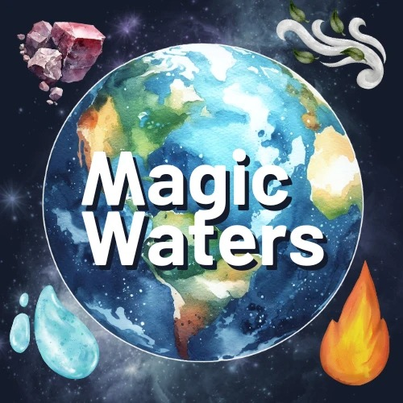
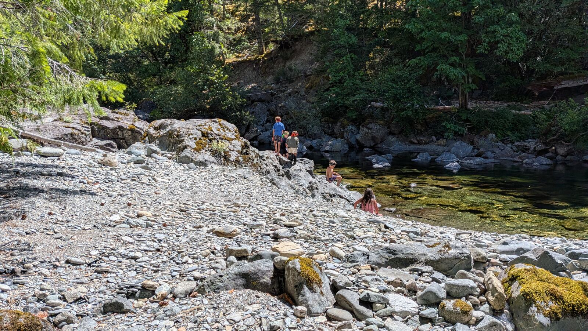
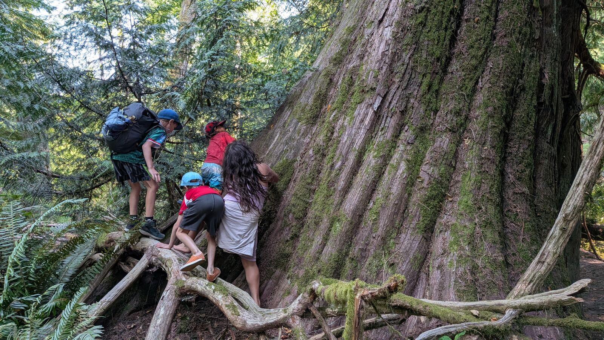

Magic Waters is a space where children and adults come back into relationship with nature, with each other, and with what it takes to grow up. It shows up every Friday in Sooke, BC, as the Nature Immersion program.

Find Your Way In
A few doors into the same field, depending on what you're looking for.
The declaration: Magic Waters is a Gaian gameworld. Here's what that means.
Read more →The weekly Friday program in Sooke. When, where, who it's for, and what it costs.
See details →The people who hold and give life to this space.
Meet them →Terms we use inside Magic Waters, and what we mean by them.
Look them up →An invitation for parents and adults ready to help hold this space.
Learn more →A guide for running a nature immersion program in your own community.
Get the guide →
In-Person Program
Children and adults meet outdoors, one day a week, all year, following the season and the weather instead of a fixed lesson plan.
